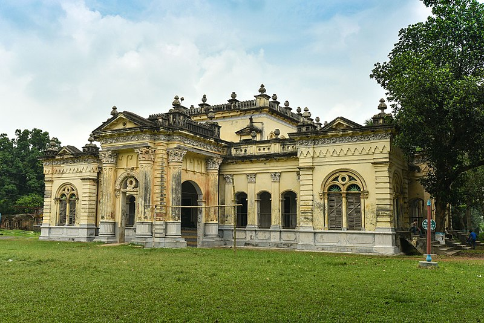
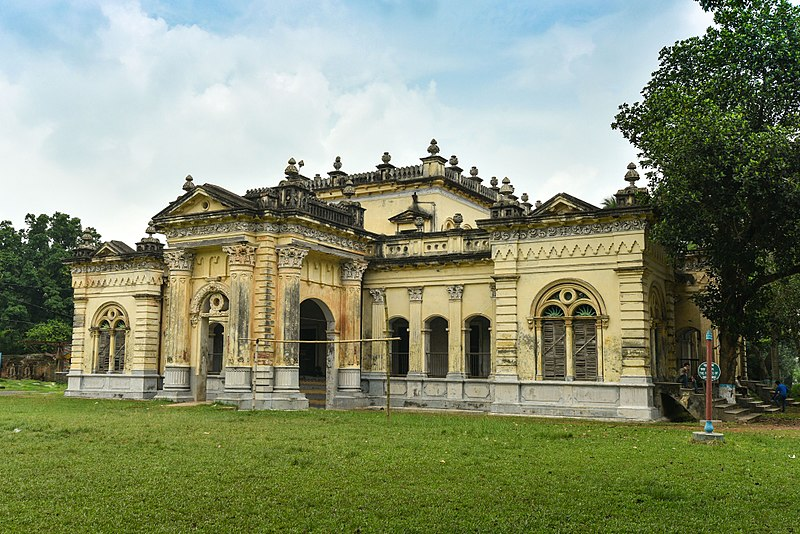

Rajshahi Division
is one of the eight first-level administrative divisions of Bangladesh. It has an area of 18,174.4 square kilometres (7,017.2 sq mi) and a population at the 2011 Census of 18,484,858. Rajshahi Division consists of 8 districts, 70 Upazilas (the next lower administrative tier) and 1,092 Unions (the lowest administrative tier). The region has historically been dominated by various feudal Rajas, Maharajas and Zamindars. Formerly comprising 16 districts, a new division (Rangpur Division) was formed with the 8 northern districts of the old Rajshahi Division from early 2010. Rajshahi is well known for its fruit, particularly for mango and lichi. Rajshahi also produces a lot of crops and vegetables like potato, carrot, rice, onion, wheat, sugarcane, pulses, spices, banana etc. Naogaon is known as the storehouse of food of Bangladesh.
History
The Rajshahi Division is named after Rajshahi District. Dominated by various feudal Rajas, Maharajas and Zamindars of mixed origins throughout history, the name is a compound of the words Raj and Shahi, both of which can be translated into reign or kingdom. Archaic spellings in the English language also included Rajeshae. The capital city of the division was formerly known as Rampur Boalia but was later renamed to Rajshahi too, to match the name of the district.
Geography
Rajshahi lies in the west of Bangladesh. To its south is Khulna division, to its east is Dhaka and Mymensingh divisions, to its north is Rangpur division and to the west is West Bengal state of India. Chalan Beel as seen from the highway The country is entirely flat plains, with several tracts still covered by forest. The division is bordered by the Padma to its west, which forms the international border with India, and the Jamuna to the east. These rivers merge at the southeastern tip of Rajshahi division in Pabna district. Apart from these main rivers, there are numerous tributaries to these rivers such as the Atrai, Karatoya and
 
